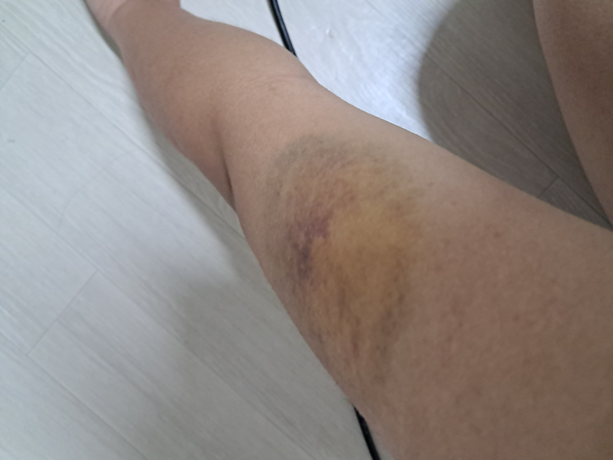

고등학교 2학년때 갔던 템플스테이!!
불교는 부처님 오신 날말곤 크게 접할 일이 없었는데... 2박 3일동안 쉼이란 무엇인지 톡톡히
배웠습니다
또 가고 싶어요
친구들과 첫일본여행계획을 세우고
밥 먹으러 갔던 디델리!! 미금에서 유명한데 저 날
처음 가봤어요 정겨운 느낌이 들던 곳~~
고등학교 졸업여행!! 다같이 밤바다에서 노래 불렀던 그 떄가 그립씁니다...
학년 파티가 끝나고 친구가 나를 물어버린 날
너무 아픈데 사람이 많아서 소리도 못 지르고
눈물만 흘렸는데 생각할 수록 웃겼다

인터쉽으로 갔던 어린이집!! 처음엔 낯설어했지만 선생님하며
따라준 아이들에게 무수히 많은 감사와 무한한 애정을...
고3때 학교를 째고 갔던 전시회!!
사진도 너무 좋았지만, 1000원에 3개인
붕어빵을 자만추했던 날...
1월1일에 만나기로 한 셋 친구가
독감과 깁스 이슈로 오붓하게
둘이 만나야 했던 날!!
칵테일 먹고
다음날 공짜 해장까지했었다.
알바 끝나고 집 가는 길에 만났던 눈사람!!
별 것도 아닌데 기분이 좋았다.